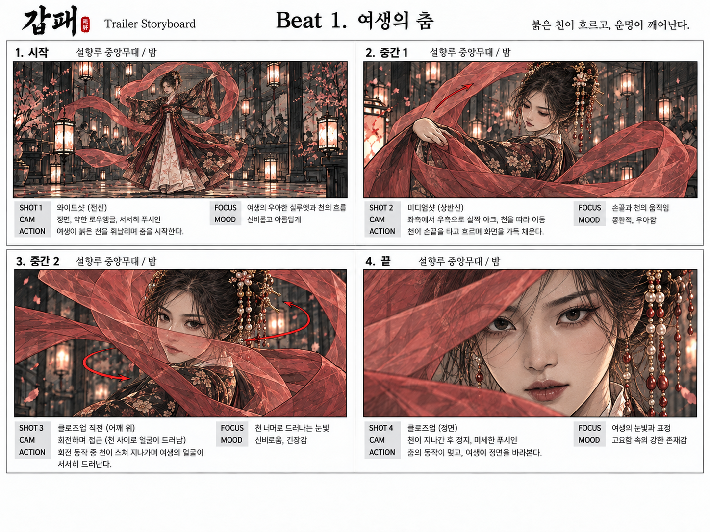
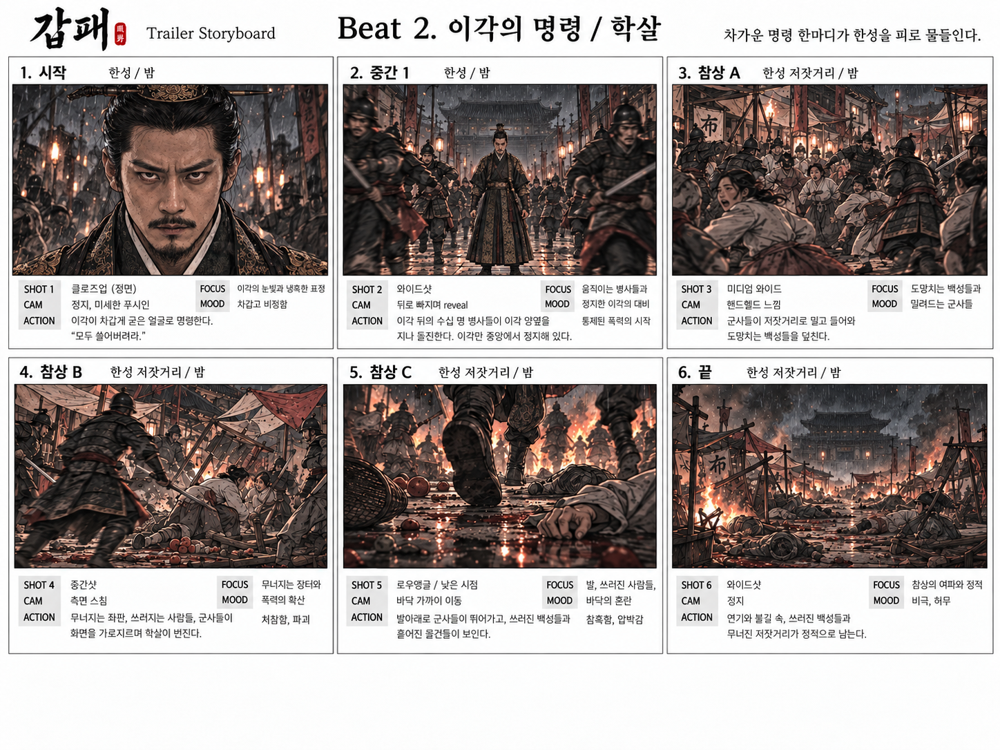

Illustrated Storyboard Complete
Turning the text storyboard into visible shots
September 24–26, 2026Seeing the Shots I Had Designed in Words
In Log #004, I broke the two-minute trailer into twenty beats and locked the timing, rhythm, camera, blocking, and sound in a text storyboard. The next step was to see whether those written decisions actually worked on screen.
From September 24 to 26, I converted each beat into a production storyboard. The goal was not to make beautiful concept art. It was to verify character positions, movement, camera direction, shot size, start and end states, and the visual flow from one shot to the next.
The storyboard was intentionally kept visually separate from the final live-action look. These drawings are guides for composition, camera, blocking, and emotion, not image references fed directly into the video model. The final generation uses the live-action character sheets and photoreal location assets instead.
Beat 1 — Yeosaeng's Dance
Beat 1 was designed as four shots: a wide full-body opening, a medium shot, an approach through the red cloth, and a final frontal close-up. It is the visual form of the HOLD rhythm written into the text storyboard.

Each storyboard panel carries SHOT / CAM / ACTION / FOCUS / MOOD. The purpose is to read the directing logic before admiring the image: what the camera is doing, what must move, what the audience should notice, and what emotional temperature the shot needs.
The first frame establishes Yeosaeng and the Seolhyangru stage. The second follows the cloth and her hands. The third lets her face emerge through the moving fabric. The fourth stops everything on a frontal close-up. The arrows make the cloth and camera direction visible at a glance.
Beat 1 is not a drawing of “Yeosaeng dancing.” It is a drawing of how the audience's gaze narrows from her full silhouette to her face over ten seconds.
Beat 2 — Yi Gak's Order / Massacre
Beat 2 is also about ten seconds, but its rhythm is the opposite. Beat 1 is HOLD; Beat 2 is HIT. The slow beauty ends and a single command throws the street into violence.

The first frame locks Yi Gak in a static frontal close-up. The second pulls back to reveal the soldiers waiting behind him. From there, the images expand and destabilize as the camera enters the street, civilians run, bodies fall, and the viewpoint drops to ground level. The final frame becomes static again, holding on the aftermath.
This was where the storyboard made the change in camera grammar especially clear: before the order, the king and camera are both exact and still. After the order, the world and camera lose stability together.
So the six images are not merely a sequence of events. They visualize a rhythm: stillness → reveal → charge → chaos → ground-level fear → silence.
What the Drawn Storyboard Helped Me Check
- Composition: who owns the frame and how much of the environment should be visible.
- Blocking: which direction a character enters, moves, and exits.
- Camera: the order of wide, medium, and close-up shots, plus push-ins, arcs, and tracking direction.
- Focus: the face, hand, weapon, cloth, or eyeline that must read in each shot.
- Mood: how HOLD, HIT, BREATHE, and FLASH change the density and motion of the frame.
- Continuity: whether the end state of one shot naturally creates the start state of the next.
The storyboard became less like a preview of the finished film and more like a way to make mistakes cheaply before the expensive moving-image stage.
Full Illustrated Storyboard Set
The final set contains 22 storyboard sheets: Beats 1 through 21 plus a separate Beat 9 card-montage sheet. Only Beats 1 and 2 are shown in the article; the original PNG files can be downloaded individually below.
Open all 22 download links ↓


I designed time in text, then checked space in drawings. The next step was to test whether those decisions could survive real camera movement and action.